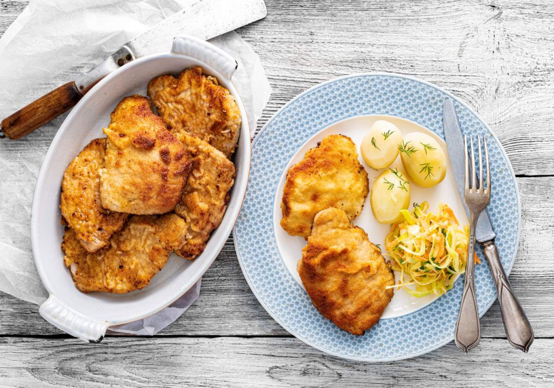

Polish pork chop (Schabowy)

Pork chop is a dish that needs no introduction to anyone. Without a doubt, it is one of the classics of Polish cuisine. It charms with its juicy interior of tender meat and crispy, golden coating. It should not be missed at a Sunday dinner. We suggest how to make the best pork chops marinated in milk and fried in lard.
- lion 1.2kg
- milk 1l
- eggs 4pcs.
- wheat flour 60g
- breadcrumbs 100g
- salt 12g
- pepper 6g
- lard 150g
-
Chops: divide the meat into 8 equal slices. We lay them out on a cutting board and cover them with cling film. Break them with a pestle into chops about 0.5 cm thick.
-
Milk: pour into a bowl. Season with salt and pepper. We put the chops in it. We cover them and put them in the refrigerator for at least 2 hours. The time for soaking the chops in milk is not included in the classification of the dish.
-
Coating: prepare three separate plates with coating elements. First dust the chops with flour, then dip them in lightly beaten egg, and finally coat them in bread crumbs.
-
Frying: in a large heavy-bottomed skillet, heat lard. Fry each pork chop over medium heat until browned. This will take about 3 minutes per side. Transfer the finished meat to a plate lined with a paper towel to get rid of excess fat.